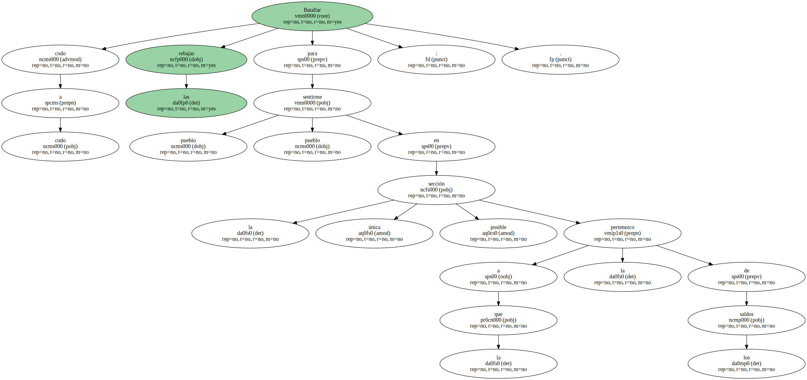
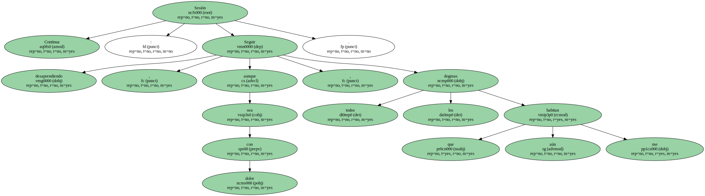
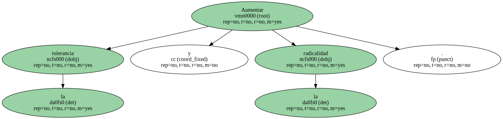
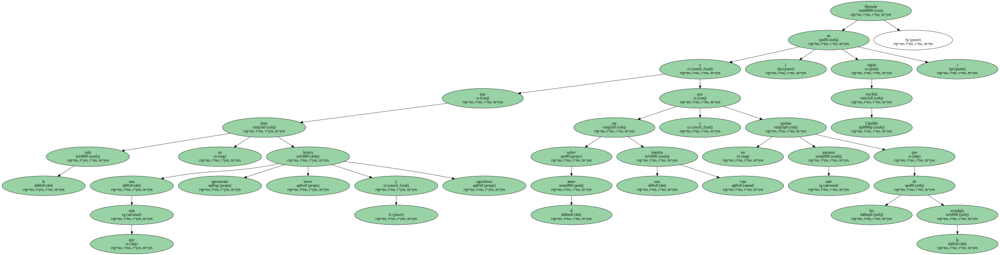
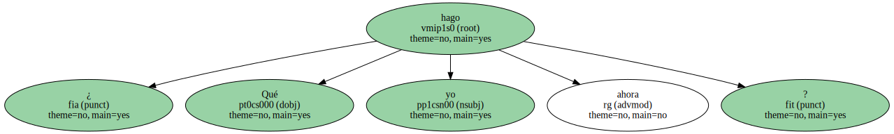
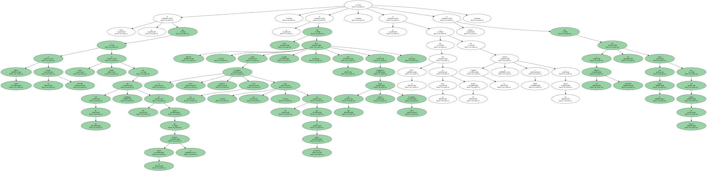
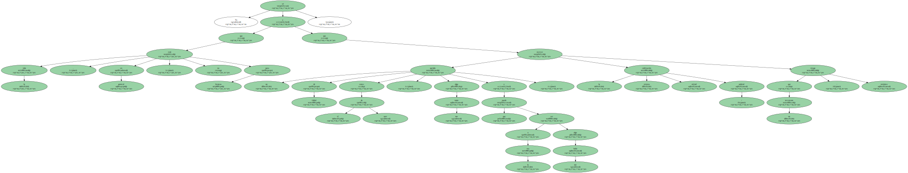
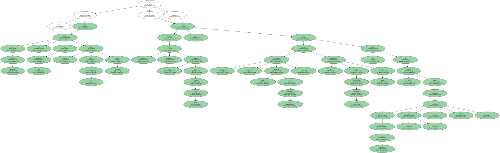
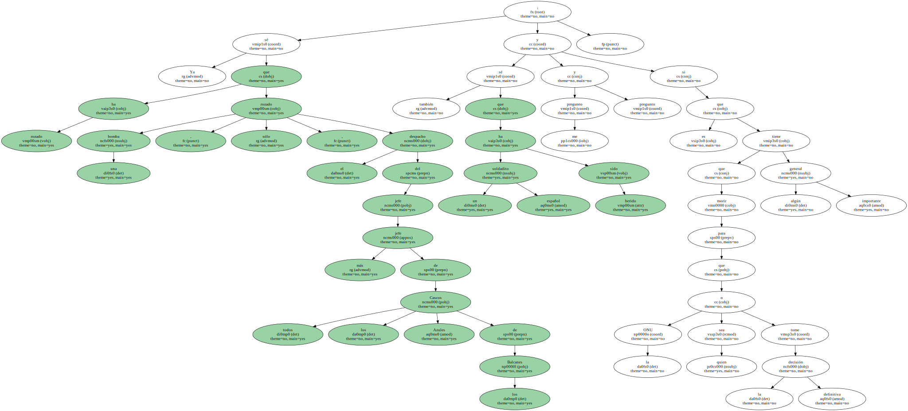

Batallar codo a codo las rebajas para sentirme pueblo pueblo en la única sección posible a la que pertenezco : la de los saldos.
Aprender a distinguir el valor del precio.

Sesión Continua : Seguir desaprendiendo , aunque sea con dolor , todos los dogmas que aún me habitan.
Aumentar la tolerancia y la radicalidad.
Ahondar en que la vida no tiene más que una lectura apresurada , breve y caprichosa y que sobre el amor cae una mancha roja y no quedan más paraísos que los de la nostalgia ( según escribió Cándido ).
( Decirte claramente , en voz alta , que aún te amo con todas las consecuencias y que ésa es la única liturgia que conozco y deseo ).

Se acabó ; se acabó todo y yo con esta depre.

Se acabó la Nochebuena , el año 93 , el día de Reyes , el gordo de Navidad , la lotería del Niño , el estreno de las rebajas , las galas de las teles ... todo , hasta el Xacobeo.

¿ Qué hago yo ahora.
Ahora ya sé que Mario Conde es un masón dormido y hasta es posible que más de uno esté temblando sólo de pensar que el martes se despierte ; ya sé que Banesto , según su nuevo presidente impuesto tan serio , tan triste , tan con cara de cabreo permanente tiene arreglo ( lo cual lleva a preguntarse por qué tienen entonces nuevo presidente ) ; ya sé que el PNV está un poco de los nervios y que la libertad se compra a plazos a los etarras ; sé también que a los indiecitos mexicanos les iba mejor con Felipe II que con Salinas de Gortari.
Ya sé que la vida , en general , no está para bromas y que un partido de fútbol como el de ayer , algo tan tonto y que puede ser a la vez algo tan bello , merece la misma calificación oficial / policial que un terremoto : máximo riesgo.
Ya sé que a Nicolás Redondo lo quieren ante los tribunales mejor antes del 27 E que después y sé que mientras católicos y protestantes se matan en Irlanda del Norte , el Vaticano , siempre sensible a los problemas , discute la traducción del aún reciente Catecismo al inglés y no llega a un acuerdo sobre si Jesús de Nazaret es - man - o - human -.
Ya sé que una bomba ha rozado , sólo rozado , el despacho del jefe más jefe de todos los Cascos Azules de los Balcanes ; también sé que un soldadito español ha sido herido y me pregunto y pregunto si es que tiene que morir algún importante general para que la ONU o quien sea tome la decisión definitiva.
